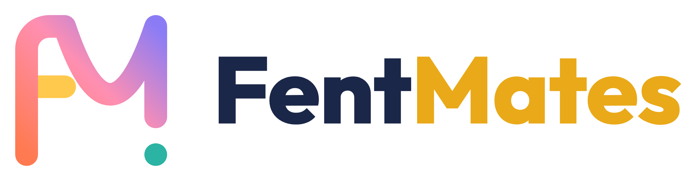
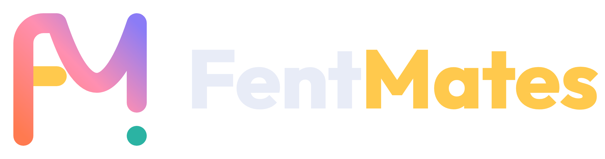
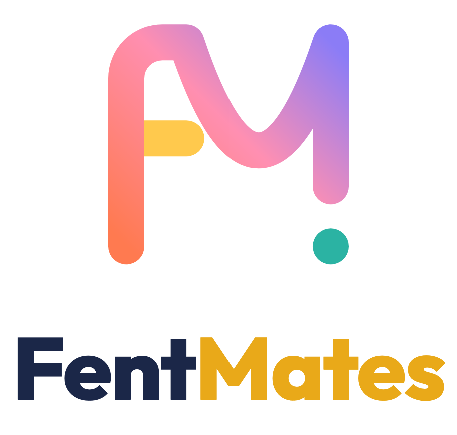
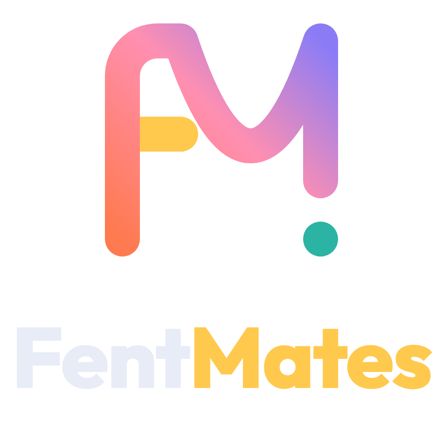
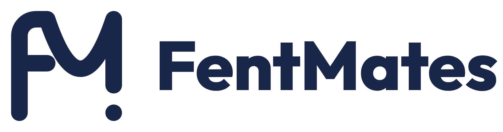

La proposta «Cinta» de la segona ronda, construïda amb una paràbola. Tots els fitxers surten de genera.py.
logo: la principal, en color.
logo sobre fons fosc: és la mateixa, funciona igual.
logo-focus: amb el focus marcat, per a apunts de funcions.
logo-negre: un sol color, per a fitxes en blanc i negre.
logo-blanc: un sol color sobre fons fosc o fotos.
logo-tessela: per a favicon o avatar.



Aquí es mostren els PNG perquè un SVG amb text dins d’una etiqueta <img> no pot carregar la lletra Outfit. Per a impressió, feu servir els PDF, que porten la lletra incrustada.

blanc i negre| Carpeta | Per a què |
|---|---|
svg/ | Web i apunts HTML. Les marques (logo*) són només geometria i es veuen igual a tot arreu. |
pdf/ | Fitxes LaTeX (\includegraphics). Són vectorials, i les que porten nom tenen la lletra Outfit incrustada. |
png/ | Documents de Word o Google, presentacions i xarxes. Tenen fons transparent i un ample de 1024 px (la marca) o 6× (amb nom). |
Exemple de capçalera en una fitxa LaTeX, amb el camí relatiu des de _eines/fonts-latex/<unitat>/:
\includegraphics[height=8mm]{../../logo/pdf/horitzontal.pdf} % en color
\includegraphics[height=8mm]{../../logo/pdf/horitzontal-negre.pdf} % per fotocopiar
Per canviar-ho, editeu genera.py i torneu-lo a executar: python3 _eines/logo/genera.py. Necessita Chrome i connexió a internet per a la lletra.